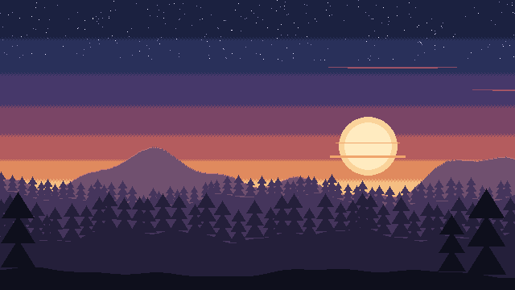
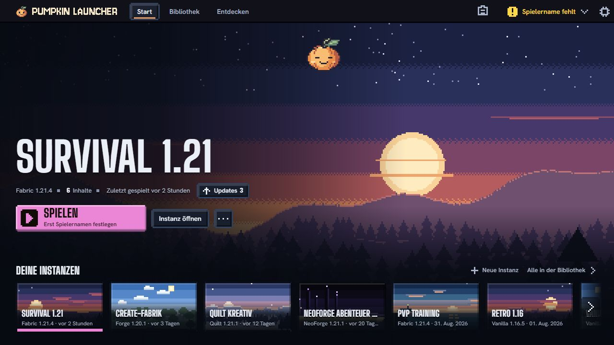
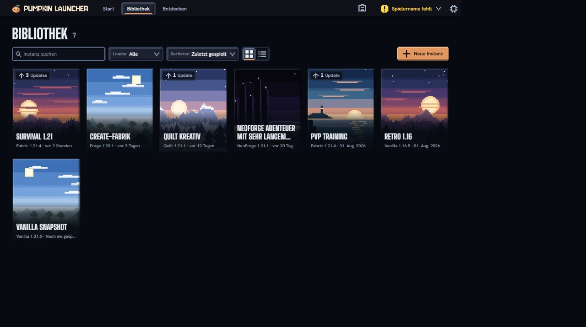
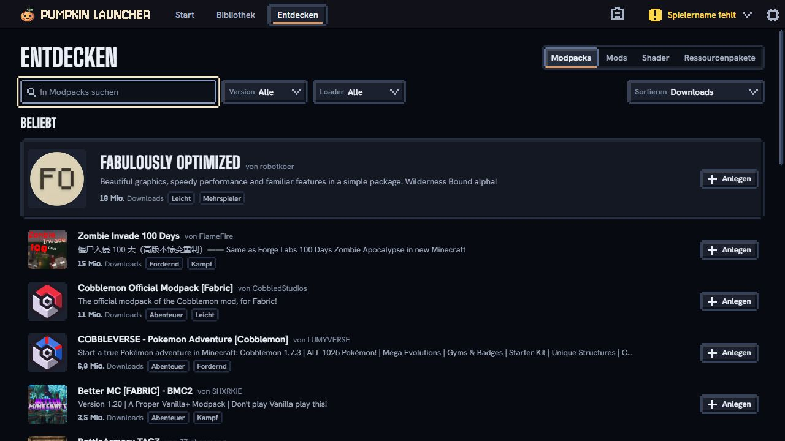
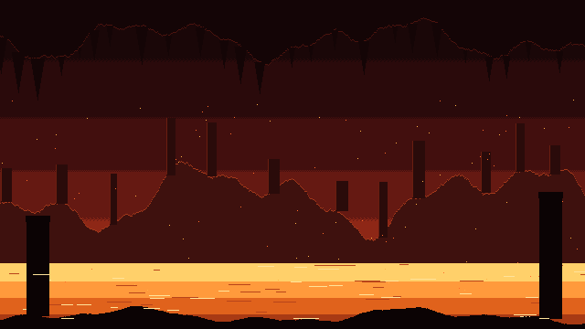
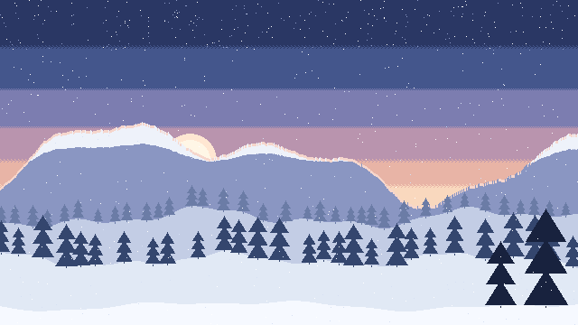
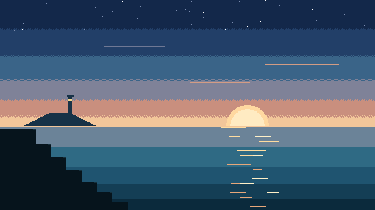

MINECRAFT PURDER ERSTE
DER ERSTE
BLOCK.
Vanilla starten. Abschalten.
Einfach wieder Minecraft spielen.

DEIN LAUNCHER FÜR MINECRAFT: JAVA EDITION
Von der ersten Holzhütte bis zum nächsten großen Modpack.
Dein Minecraft beginnt hier.
WILLKOMMEN ZURÜCK IN DEINER WELT.
Ein Ort für deine Instanzen. Ein Klick ins nächste Abenteuer.



Aktuelle Entwicklungsversion mit Beispielinstanzen
Bau etwas Kleines. Probier etwas Großes.
Pumkpin macht Platz für beides.
Vanilla starten. Abschalten.
Einfach wieder Minecraft spielen.

Neue Mods. Ganze Modpacks.
Mehr Möglichkeiten für deine Welt.

Jedes Projekt für sich.
Und trotzdem alles zusammen.
Survival, kreatives Bauen oder ein neues Modpack: Versionen und Einstellungen bleiben genau dort, wo sie hingehören.
Mods und Modpacks im Modrinth-Katalog finden und direkt zur passenden Instanz hinzufügen.
Du hast schon eine .mrpack-Datei? Importiere sie und gib deinem nächsten Abenteuer einen eigenen Platz.
BEVOR ES LOSGEHT
Kleiner Kürbis.
Große Pläne.
Ein eigenständiger Launcher für Minecraft: Java Edition. Hier verwaltest du deine Instanzen, entdeckst Mods und Modpacks und startest ins Spiel.
Noch nicht. Der Launcher ist in Entwicklung und es gibt aktuell keinen öffentlichen Installer. Sobald die erste Version bereitsteht, findest du den Download hier.
Vanilla und Fabric lassen sich bereits installieren und starten. Dazu kommen Mods und Modpacks von Modrinth sowie der Import eigener .mrpack-Dateien. Weitere Modloader sind in Arbeit.
Ja. Pumkpin ersetzt den Besitz von Minecraft: Java Edition nicht. Der Launcher ist ein eigenständiges Projekt und kein offizielles Produkt von Mojang oder Microsoft.


Wir arbeiten am letzten Feinschliff.
Der öffentliche Download folgt.